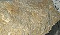

n-tetracosane

Has synonym(s): tetrakosane, Tetracosane
Definition: Tetracosane, also called tetrakosane, is an alkane hydrocarbon with the structural formula H(CH2)24H. As with other alkanes, its name is derived from Greek for the number of carbon atoms, 24, in the molecule. It has 14,490,245 constitutional isomers, and 252,260,276 stereoisomers.n-Tetracosane is found in mineral called evenkite in the Evenki Region on Lower Tunguska River in Siberia and the Bucnik quarry near Konma in eastern Moravia, in former Czechoslovakia. Evenkite is found as colourless flakes and is reported to fluoresce yellow-orange.
Source: Wikipedia
Wikipedia Page (Something wrong with this association? Let us know.)
Wikidata Page (Something wrong with this association? Let us know.)